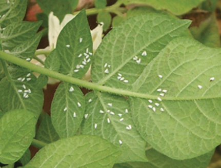

viral diseases. Fundamental approaches for controlling the round potato insect
pest include biological, cultural, mechanical, and chemical methods. Insect pest
management is described in the following subsections.
(a) Whiteflies
Whiteflies (Figure 5.4) are common pests in potato crops. They feed on plant sap,
excrete sticky honeydew, and can transmit plant diseases.

Figure 5.4: White flies underneath round potato leaves
Management of whiteflies: Inspect the crop plants regularly for whiteflies and
their eggs, especially the undersides of leaves, and apply appropriate management
measures. Avoid planting potatoes near crops that are known to attract whiteflies,
such as tomatoes or peppers. Use yellow sticky traps to capture adult whiteflies.
Apply insecticidal soaps or neem oil, which are less harmful to beneficial insects.
Use systemic insecticides as a last resort, following the recommended guidelines
and safety precautions. Combine multiple control methods for effective and
sustainable whitefly management.
(b) Potato moth
Potato moths (Figure 5.5 (b)) attack potatoes from the field and in the warehouse.
They undergo complete metamorphosis (egg-larvae-pupa-adult) and are more
common in warm, dry, and hilly areas. The significant damage caused by the
moth is making holes in the potatoes that pave the way to fungal and bacterial
diseases, leading to potatoes rotting (Figure 5.5 (a)).